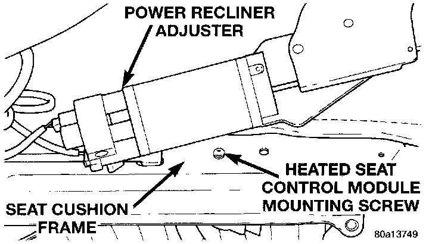
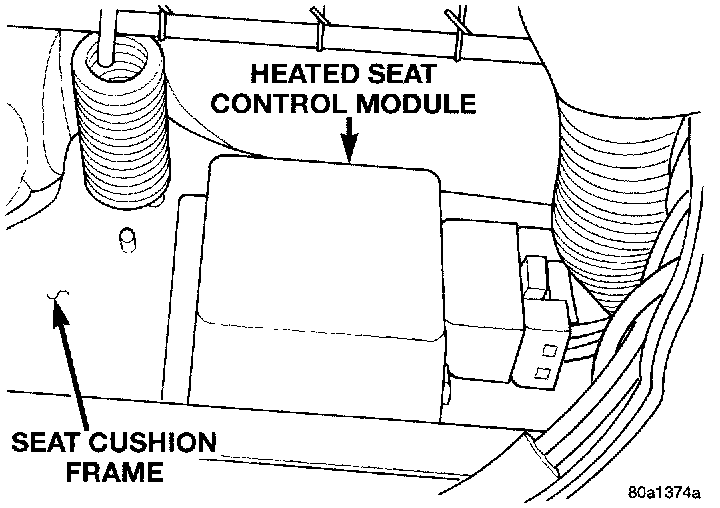

Seat Temperature Control Module: Service and Repair
REMOVAL1. Move the power seat adjuster to its full up and full forward stop positions.
2. Remove the three screws that secure the seat side shield to the seat cushion frame.
3. Pull the seat side shield away from the seat far enough so that the power recliner adjuster lower bracket can be seen.
4. Adjust the seat back with the power recliner switch so that both of the two bolts in the power recliner adjuster lower bracket can be accessed.
5. Disconnect and isolate the battery negative cable.
6. Remove the two bolts that secure the power recliner adjuster lower bracket to the seat cushion frame.
Heated Seat Control Module Remove/Install:

7. Gently pry the power recliner adjuster lower bracket upwards to access the heated seat control module mounting screw.
8. Remove the heated seat control module mounting screw from the seat cushion frame.
Heated Seat Control Module:

9. Reach under the rear of the seat cushion to lower the heated seat control module and mounting bracket unit from the inside of the seat cushion frame.
10. Unplug the heated seat control module wire harness connector and remove the module from under the seat.
11. Reverse the removal procedures to install. Tighten the power recliner adjuster lower bracket bolts to 28 N.m (20 ft. lbs.).